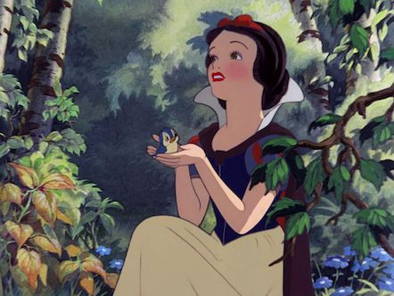
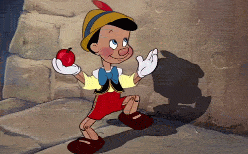
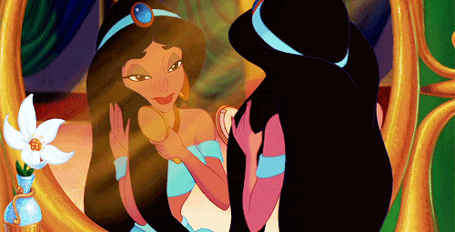
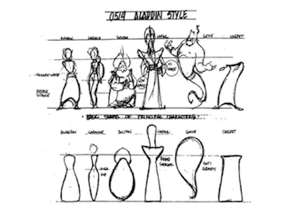

1900s? What's the difference!
-

1. 평면성(2D)
배경의 채색은 음영으로 3차원의 공간을 보여주지만
자세히보면 캐릭터의 뚜렷한 외곽선이
인물을 배경에서 분리해내고 있죠
이것은 모더니즘 회화의 영향을 받은것이기도 합니다

2. 원색 사용
원래 색감으로 유명한 디즈니!
특히 1900년대에는
더욱 자유롭고 원색적인 스타일이였답니다
그래서 좀 더 음악적이고 생동감있게 나타나죠
이러한 색의 사용은 현실적 세계를 표현하려는것보단
색의 따뜻함이나 차가움 등의 다양한 특성들을 이용하려는 작가의 의도였다고해요
이것 역시 모더니즘 회화에서 두드러지는 표현방식이라고합니다
